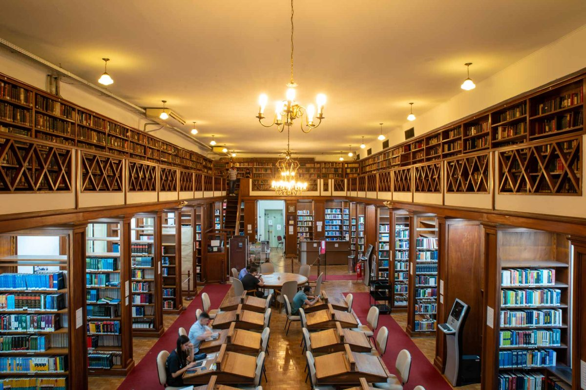
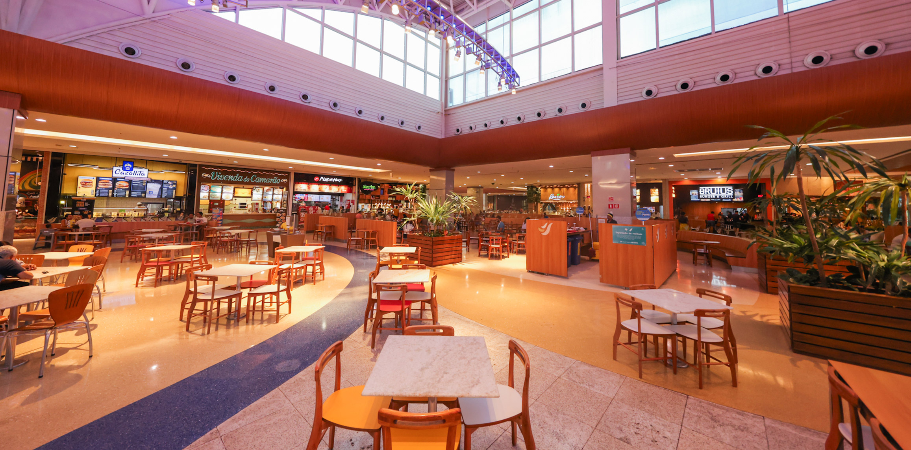
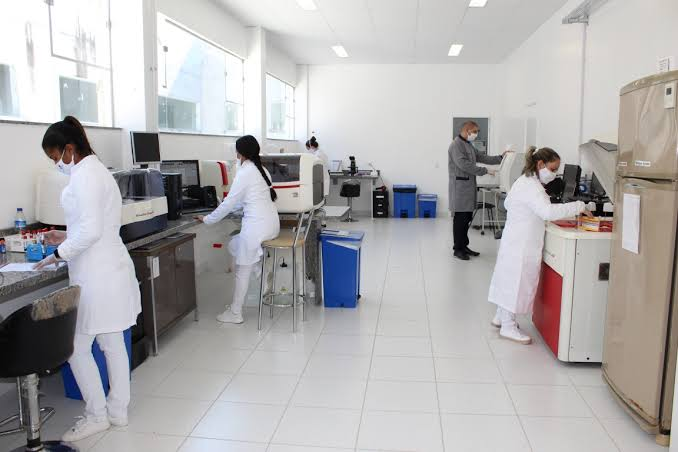
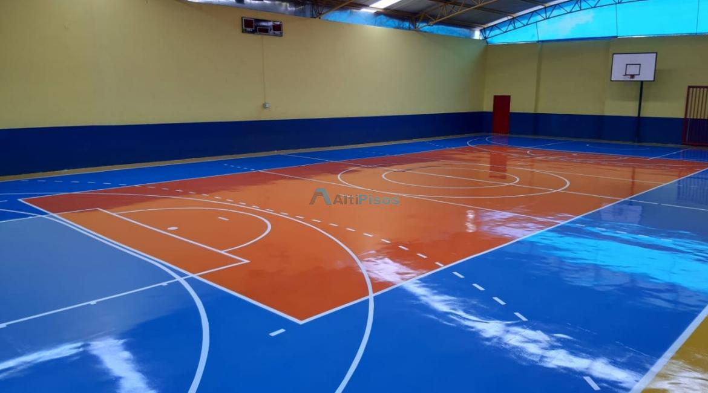

Biblioteca Central
Localização: Bloco acadêmico, próximo às salas de aula.
Categoria: Educação e pesquisa.

Espaço silencioso para estudos individuais e em grupo, com acervo físico e digital.
Conheça a Biblioteca CentralLocalização: Bloco acadêmico, próximo às salas de aula.
Categoria: Educação e pesquisa.

Espaço silencioso para estudos individuais e em grupo, com acervo físico e digital.
Conheça a Biblioteca CentralLocalização: Área central do campus.
Categoria: Alimentação e convivência.

Local de convivência com diversas opções de refeições e lanches para os estudantes.
Conheça a Praça de AlimentaçãoLocalização: Bloco de laboratórios do campus.
Categoria: Tecnologia e ensino prático.

Ambiente equipado para a realização de aulas práticas, experimentos e pesquisas acadêmicas, com equipamentos especializados para atividades técnicas e científicas.
Conheça o Laboratório de InformáticaLocalização: Bloco acadêmico, em uma área reservada para estudos.
Categoria: Estudos e colaboração.
Indicada para trabalhos em grupo, revisão de conteúdos e preparação para avaliações. É importante manter o ambiente organizado e respeitar os demais estudantes.
Localização: Área esportiva do campus.
Categoria: Esportes e lazer.

Espaço destinado à prática de esportes, exercícios físicos e atividades recreativas. A utilização pode depender da disponibilidade e das regras da instituição.
Conheça a Quadra Poliesportiva